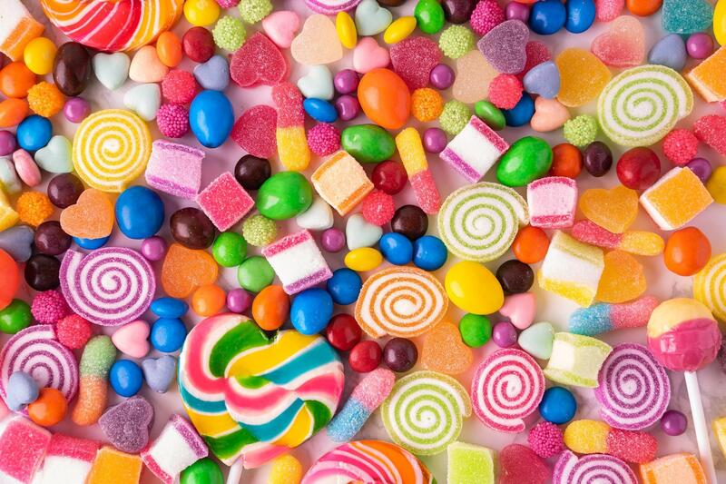

סוכר
צריכת סוכר מופרזת עלולה להוביל לבעיות בריאותיות כמו השמנה, סוכרת, מחלות לב, פגיעה בשיניים, מצבי דלקת ושינויים במצב הרוח.
מתחילת המאה ה-20, צריכת הסוכר לנפש בעולם גדלה באופן דרמטי, פי כמה וכמה. הגידול נובע משינויים תזונתיים, תיעוש מזון, והפיכת הסוכר לחלק מרכזי בתעשיית המזון המעובד. בתחילת המאה, צריכת הסוכר הייתה מצומצמת יחסית, שכן סוכר היה פחות זמין ויקר יותר לייצור. עם התקדמות הטכנולוגיה, חקלאות ממוכנת והוזלת תהליכי הפקה, סוכר הפך למרכיב נגיש וזול. כתוצאה מכך, מזונות מעובדים ומשקאות ממותקים הפכו פופולריים יותר, והובילו לעלייה חדה בצריכת הסוכר הגלובלית.
העלייה המשמעותית הזו בצריכת הסוכר תרמה רבות לעלייה בשיעורי השמנת יתר, סוכרת סוג 2, ומחלות מטבוליות אחרות ברחבי העולם. מעבר לכך, הסוכר מעודד התמכרות לטעם המתוק ומוביל לצריכה מוגברת של קלוריות מיותרות, מה שמחמיר את הבעיות הבריאותיות לאורך זמן.
צריכה מוגזמת של סוכר, ובעיקר של פרוקטוז, הוכחה כגורמת למגוון רחב של מחלות כרוניות והשפעות שליליות על הבריאות. אחת המחלות הנפוצות היא סוכרת סוג 2, הנגרמת כתוצאה מעלייה ברמות הסוכר בדם והשפעה שלילית על תפקוד האינסולין. פרוקטוז, במיוחד כשהוא נצרך בכמויות גדולות ממשקאות ממותקים ומזון מעובד, אינו מעובד בצורה יעילה על ידי תאי הגוף אלא בעיקר בכבד, שם הוא עלול לגרום לכבד שומני, מצב המסוכן להתפתחות דלקות ותפקוד לקוי של הכבד.
בנוסף, פרוקטוז עלול לתרום להשמנה בשל ההשפעה שלו על עידוד אגירת שומן בגוף, ובפרט באזור הבטן, דבר המגביר את הסיכון למחלות מטבוליות כמו תסמונת מטבולית ומחלות לב וכלי דם. צריכת סוכר מוגברת גורמת גם לעלייה ברמות הטריגליצרידים בדם, המהווה גורם סיכון משמעותי למחלות לב כמו טרשת עורקים, שעלולה להוביל לאוטם שריר הלב ושבץ מוחי.
צריכה עודפת של סוכר נקשרת גם ליתר לחץ דם, המעלה את הסיכון לפגיעה בכלי הדם הגדולים והקטנים ולהתפתחות מחלות לב וכלי דם. כמו כן, מחקרים הראו שפרוקטוז עלול להאיץ את תהליכי ההזדקנות התאית ולהשפיע על רמות חומצת שתן, מה שיכול להוביל להתפתחות של גאוט (שיגדון).
סוכר ודלקות
סוכר והשמנה
במחקר שנערך על 94 נבדקים, נמצא כי צריכה יומית של פרוקטוז או סוכרוז (שמשלב גלוקוז ופרוקטוז) גורמת לכבד לייצר פי שניים יותר שומן בהשוואה לצריכת גלוקוז, וזאת למרות שהערך הקלורי של כל המשקאות היה זהה.
על פי הערכות, בעולם המערבי, הצריכה הממוצעת של סוכר (סוכרוז או פרוקטוז) עומדת על כ-70-90 גרם ליום, בעיקר ממזונות ומשקאות מעובדים. ארגון הבריאות העולמי (WHO) ממליץ להגביל את צריכת הסוכרים הפשוטים לכ-25 גרם ביום, שהם כ-5% מצריכת הקלוריות היומית.
סוכר ומחלות לב
סוכר וגאוט (שיגדון)
סוכר והתאוששות אחרי אימון
סוכר ולחץ דם
במחקר שבדק את ההשפעות של פרוקטוז מול גלוקוז, 37 נבדקים התבקשו להגביל את צריכת הפרוקטוז שלהם לפחות מ-10 גרם ביום למשך 6 שבועות. חצי מהנבדקים קיבלו תוספת פרוקטוז כדי להשלים את כמות הסוכר שהם צרכו לפני ההגבלה, וחצי מהנבדקים קיבלו תוספת גלוקוז. לחץ הדם הדיאסטולי של הנבדקים שצרכו גלוקוז ירד בממוצע ב-4 ממ"כ.
סוכר וסרטן
סוכר והזדקנות
סוכר ואורח החיים שלי
באופן אישי, חוויתי בעבר התקף גאוט – התקף מלווה בכאבים עזים שגרמו לי להיות מרותק למיטה למשך שבוע. עד אותו יום, צרכתי כמויות גדולות של סוכר, כי לא סבלתי מעודף משקל ולא הייתי מודע למגוון הרחב של המחלות וההשפעות השליליות שיש לסוכר על הבריאות. מאז, צמצמתי משמעותית את כמות הסוכר בתזונה שלי, ואני חייב לומר שאם יש דבר אחד שאתם יכולים לעשות כדי לשפר את הבריאות שלכם, זה לצמצם ככל האפשר את צריכת הסוכר.
מאז השינוי, התחושה הכללית שלי השתפרה פלאים – אני סובל הרבה פחות מדלקות, מרגיש ערני יותר, הביצועים הספורטיביים שלי השתפרו ואני מרגיש הרבה יותר חיוני. בנוסף הצורך במתוקים נעלם במהירות (אם כי לא באופן מיידי).
חשוב לציין שאכילת פירות שלמים נחשבת לבריאה למרות תכולת הסוכר שלהם, ואין צורך להימנע מהם. הסיבה לכך היא שפירות מכילים מרכיבים נוספים ובריאים כמו מים, סיבים תזונתיים, ויטמינים ומינרלים.
חשוב: לפני שאתם מחליטים לשנות את אורח החיים שלכם, כדאי להתייעץ עם איש או אשת מקצוע מוסמכים בנושא.
כיצד מבצעים ניסוי מדעי?
ביצוע ניסוי מדעי בצורה נכונה חיוני להסקת מסקנות מהימנות. ללא הקפדה על עקרונות מדעיים ברורים, תוצאות הניסוי עלולות להטעות ולגרום לפרשנות שגויה של הנתונים.

עיסויים
עיסויים תורמים לשיפור הבריאות על ידי הקלה על מתח וכאבים, שיפור זרימת הדם ואיכות השינה, ומשלבים טוב עם פעילות גופנית ותזונה נכונה.